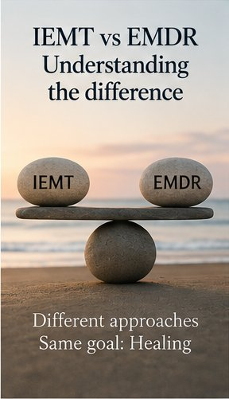
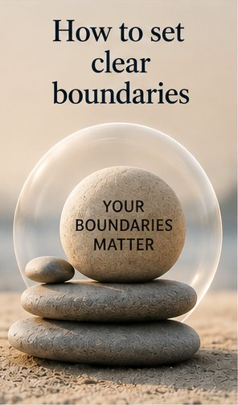
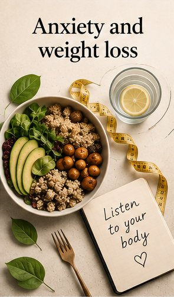
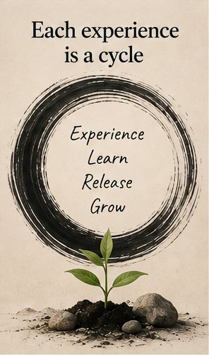

Fig. 2
Hypnotherapy
Access the subconscious mind, where automatic thoughts and emotional patterns are stored — and gently release what no longer aligns.
Explore →For women over 40 discovering that their “normal” is no longer sustainable — living with anxiety, exhaustion, lack, or an underlying sense of discontent, unsure how to move forward. Through optimising your breathing and uncovering inherited, subconscious patterns and the behaviours they drive, you create the conditions for profound, lasting change. The ripple effect is a life no longer shaped by external expectations, but consciously created from the inside out.

Breathe out.
Notice which of these you recognise.
Overthinking, muscle tension, shallow breathing, disrupted sleep and emotional overwhelm — an internal system working overtime against perceived threats.
→
Binge eating, substance use and other unwanted patterns aren’t weakness — they’re survival adaptations, the mind and body seeking relief.
→
Rarely about being kind — more often about seeking approval. The fawn response forms when belonging feels like something we must earn.
→
Emotion is energy in motion. When we suppress or distract from what we feel, the imprint stays — and the body keeps the score.
→
Relationships don’t create our triggers — they reveal them, exposing the unresolved stories and beliefs we’ve carried for years.
→
Often the body’s wisdom signalling it can no longer sustain constant doing, fixing and managing. As energy depletes, the nervous system strains.
→
Willpower works on the surface. Anxiety, guilt and people pleasing live deeper — in the subconscious mind and the nervous system. That’s where we work.
One of the greatest misconceptions about hypnosis is that it’s a special state a therapist puts you into. In reality, it’s something we all experience naturally. Whenever we become so absorbed in our thoughts, beliefs, emotions or interpretations that they shape how we experience the world, we are in a form of hypnosis.
Much of it is inherited. From childhood onwards we absorb beliefs, behaviours, expectations and emotional responses from family, culture and life experience. Over time these become automatic patterns running beneath conscious awareness — and we don’t notice we’re seeing life through these filters, because they feel like reality itself.
The purpose of hypnotherapy isn’t to hypnotise you further — it’s to help you awaken from these unconscious patterns. Guided relaxation and focused awareness quieten the conscious mind just enough to reveal the beliefs and habitual responses that have been running automatically. Once they’re seen for what they are — learned perspectives rather than objective truths — they can be updated, released, or replaced with healthier, more authentic ways of responding.
In this sense, the real work is to bring you out of hypnosis rather than into it. More conscious, not less. More aware, not more controlled. More connected to your authentic self than to inherited conditioning.
Access the subconscious mind, where automatic thoughts and emotional patterns are stored — and gently release what no longer aligns.
Explore →
Breath and hypnosis combined into one somatic journey. As unconscious patterns surface, they’re often felt in the body — the breath softening what the mind alone could never think its way out of.
Explore →
Integral Eye Movement Technique — swift, gentle work on emotional and identity imprints, without needing to relive painful memories. Often compared with EMDR.
IEMT vs EMDR →A free Nervous System Reset audio for women who feel emotionally exhausted and overwhelmed. Connect with your breath, soften the tension, and let your mind settle — morning, bedtime, or any moment you need a pause.


For years, Lily knew what it meant to adapt, withdraw, and people please to feel safe — until she discovered those patterns weren’t her identity. They were survival responses. Today she helps women release them through subconscious, trauma-informed work and coaching.
I had a past life regression session with Lily a few months back and it was deeply transformative, whilst relaxing at the same time. I felt like I offloaded a lot of stuff that wasn’t mine, that I had carried through into this lifetime. It was mind-blowing the similarities between how my life has played out so far and how it was influenced by experiences in past lives. I felt lighter and freer after the session. Lily’s space is comfortable and she ensures that you are relaxed throughout. I feel that this is a piece of the healing puzzle for us all if we are looking to level up in life. I have now learned to access my higher self at any time which is a valuable tool in navigating life’s challenges.
Working with Lily was an incredible experience. She made me feel safe instantly by explaining the process, never rushing me, and preparing me well. The session itself was profound and very moving, Lily guiding me gently and professionally the entire time. This was a very positive, life-changing experience and I feel very thankful to Lily. Highly recommended.
I love working with Lily. She’s incredibly present and has a wonderful capacity to use her skills as a hypnotherapist to gently fathom one’s depths and heal old wounds and strengthen one’s foundations in a very relaxing and supportive environment. Highly recommended if you wish to heal your pain, resolve your triggers and grow fully into yourself.
About a year ago, I was working through a major life lesson, trying to find some semblance of reason or meaning & indeed, why I was triggered so strongly. In just one session with Lily Alan, I found that meaning and with it a sense of peace. And miraculously, following that one session, I have not triggered again. And I was able to move on with my life without the baggage. If you are struggling through a time in your life, I highly recommend booking a session with Lily Alan.
Lily is an exceptionally gifted hypnotherapist whom I recently approached for a past-life regression. The process lasted just over two hours and was wonderfully healing. While under hypnosis, I was able to retrace several key issues back to previous lifetimes and, with Lily’s guidance, allow them to be transmuted and released. The results were surprisingly immediate and I was delighted to find myself experiencing a perspective shift in the days following the session. Perhaps most valuable of all is the clarity with which I now see my situation and the peace of mind that this necessarily entails. I highly recommend Lily to anyone considering a past-life regression.
I had an amazing session with Lily, she is a calm and very skilled therapist. Lily was able to help me unlock things that I never thought would shift, and so my road to recovery is now well underway. I am extremely grateful Lily:) I would highly recommend Hypnoworx.
I would wholeheartedly recommend Lily Alan -Hypnoworx to anyone who is wanting to delve deep into their subconscious. What you find there might surprise or even shock you, but you will come out of it with a clearer understanding of who you are and what makes you tick. I wanted to uncover any past issues that had manifested as pain and immobility in my body. I was able to discover some very deeply buried trauma and face it head on. Lily gently guided me through the session and made me feel completely safe and emotionally supported every step of the way. I came out of the session feeling lighter, more peaceful and with an incredible sense of empowerment. It was an amazing experience.
If you’ve tried thinking your way out of anxiety and it keeps returning, the pattern usually lives deeper than conscious thought. Hypnotherapy, breathwork and IEMT work at the subconscious and somatic level — which is why many clients notice shifts that years of “trying harder” couldn’t create.
Boundary guilt is rarely a communication problem — it’s a safety problem. Once the old imprint that made “no” feel like a threat is released, boundaries stop requiring you to override an internal alarm.
No. These approaches are gentle and respectful — you remain aware and in control the whole time, and emotional imprints can be released without revisiting painful details unless you’re ready and willing.
Both use eye movements, but in EMDR traumatic imagery is central to the work, while in IEMT it’s largely irrelevant — IEMT works with imprints of emotion and identity instead, which many women find gentler and more accessible.

IEMT vs EMDR: What’s the Difference, and Which Is Right for You?IEMT & EMDR
How to Set Clear Boundaries Without Drowning in Guilt or ShameBoundaries
Anxiety and Weight: Understanding the Nervous-System ConnectionAnxiety & body
Each Experience Is a CycleGrowthEvery client receives private access to Lily’s personal healing portal: guided hypnosis audios, transformational videos and supportive resources, crafted from her clinical experience — your companion for change.
Your Support Hub — Members only
A free 20-minute call — no pressure, no obligation. Just a conversation to see if this approach aligns with your goals.
Book your free consult →